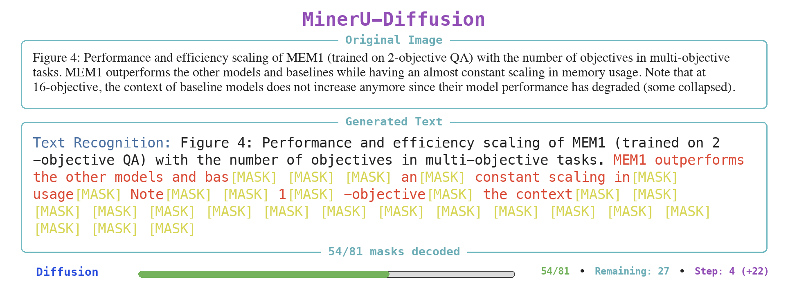
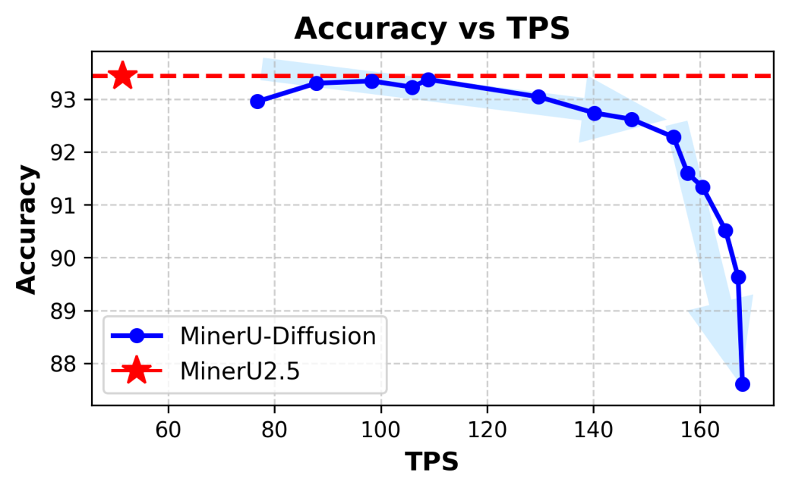

Paper Notes: MinerU-Diffusion
last updated 2026-05-18
Core claims:
“left-to-right causal generation is an artifact of serialization rather than an intrinsic property of the task.” - p. 1 “autoregressive formulations implicitly cast OCR as a language-conditioned reconstruction […] When visual signals are weak […] models tend to over rely on these priors, leading to semantic hallucinations and cumulative errors.” - p. 3
They do this with a block-level diffusion LLM (dLLM), which does causal language modeling (left-to-right), but a whole block at a time. In the below figure from the paper, the block size is 81 tokens. A dLLM simultaneously decodes all the tokens in a block, starting with all of them labeled as [MASK]. In the figure, the black text is from the previous block, and the red text + [MASK] tokens are from the current block diffusion (currently on “step 4”).

Headline results: - you can get a ~2x speedup at 99.9% relative accuracy, or a ~3x speedup at 99% relative accuracy, though you get a huge drop after that - the drop must come from block sizes growing too large for the model/too few diffusion steps

dLLM Attention
Tokens attend to each other bidirectionally within each block and causally to all previous blocks.
Curriculum Learning
Interestingly, they opt for curriculum learning (it’s back!!!).
DODO OCR is another diffusion LLM.